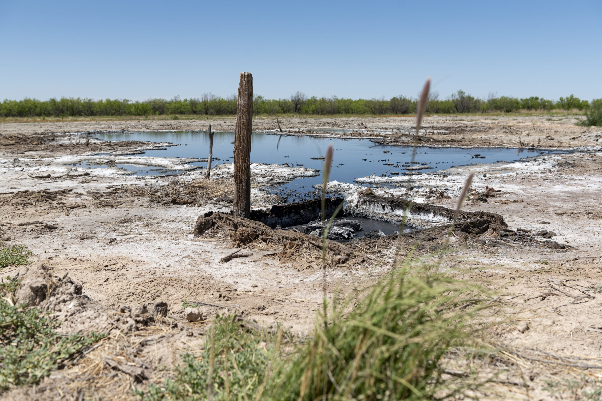
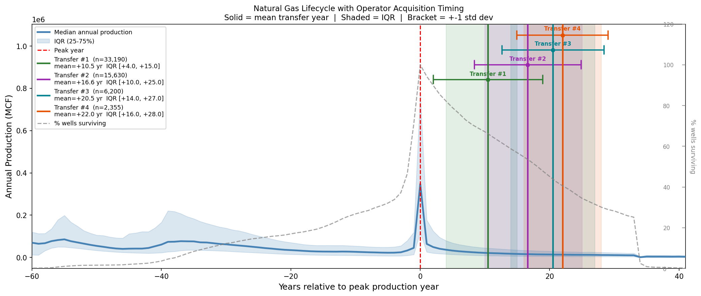
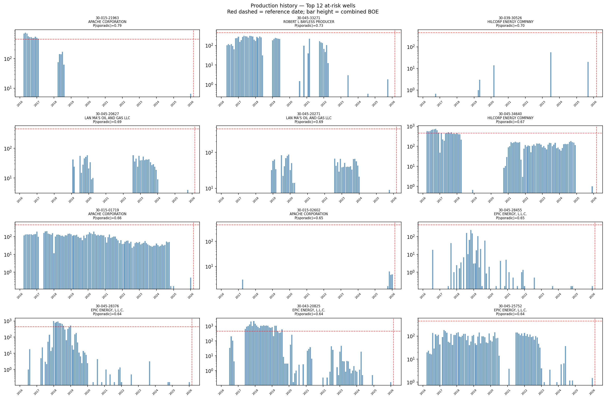

Lifecycle modeling across New Mexico's open oil and gas wells — which wells stop producing, which get plugged, and which are left leaking

Orphaned wells — oil and gas wells left unplugged after they stop producing — are a persistent source of methane, a greenhouse gas roughly eighty times more potent than CO2 over a twenty-year horizon. Deciding which wells to plug first is a data problem: the states that carry the liability hold decades of production, injection, and permitting records, but no ranked list of what is actually finished.
Over nine months as a graduate intern at the Carbon Containment Lab, I built a pipeline over the New Mexico Oil Conservation Division's full well registry — every record in the state, from permits through wells already sealed — to model how wells move through their lifecycle, predict which ones stop producing for good, and project how much of the resulting backlog will actually be plugged.
Machine learning and statistical models over well-level production histories: decline-curve fits to characterize how each well is aging, classifiers for sporadic and intermittent production, water-cut prediction, and survivorship models for the transition from producing to idle to permanently stopped. Wells were banded by whole-year output into Above Marginal, Marginal, Very-Marginal, and Extra-Marginal groups, and each band's transition rates were measured directly from twenty-five years of records rather than assumed.
A finding that shaped the final method: because so few wells are ever plugged, parsimonious models for predicting plugging disagree with one another and carry heavy assumptions while remaining only weakly predictive. Predicting which wells stop producing is tractable; predicting whether anyone then plugs them turns out not to be a property of the well at all. The delivered projection therefore applies observed empirical transition rates to today's fleet, and the appendix quantifies exactly how much each well-level trait adds — a negative result worth stating cleanly.
Spatial work tied wells to basin and district — the fleet splits between the Permian in the southeast and the San Juan in the northwest — tested true-vertical-depth neighborhoods, and examined fixed-lag relationships between injection wells and their neighbors' production, separating wells that are declining naturally from wells whose behavior is driven by nearby operations.
The work was delivered in September 2026 as a written fleet portrait with a companion technical appendix, prepared for the New Mexico Oil Conservation Division to inform regulation and the allocation of state plugging resources: which operators hold the weakest wells, which wells are inactive or non-compliant, and how the rule changes effective July 1, 2026 would show up in the data if they work as intended — as a rise in wells plugged shortly after they stop producing, rather than years later.
Alongside the fleet analysis, I built an economic model for structuring royalty-based incentives to plug abandoned wells — exploring how payments to operators and landowners could be sized against plugging costs and remaining well value to make remediation self-sustaining rather than purely state-funded.

Gas well lifecycle, reflecting production and operator acquisitions

Sporadic, marginal production — wells kept nominally active to stay outside idle-well rules